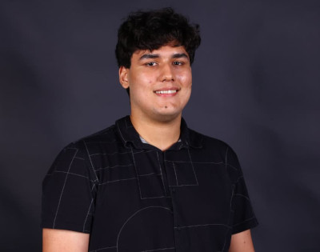

$ whoami

Sou o Eduardo, graduado em Sistemas Para Internet na Uncisal, pós-graduando em Cibersegurança e Governança de Dados na PUC Minas. Trabalho com Tecnologia da Informação, possuo experiência em administração de servidores GNU/Linux e Windows, segurança da Informação, monitoramento e observabilidade de infraestrutura e redes de computadores.
Este blog foi desenvolvido com arquitetura estática Vanilla, focando em performance e minimalismo. Este é um projeto pessoal, que objetiva expor meus pensamentos, estudos e assuntos relacionados à tecnologia, segurança cibernética e ciência.
[Contatos e Redes]
-
LinkedIn
Conexões profissionais, histórico de carreira e artigos da rede.
-
Currículo Lattes
Minha trajetória acadêmica e projetos de pesquisa.